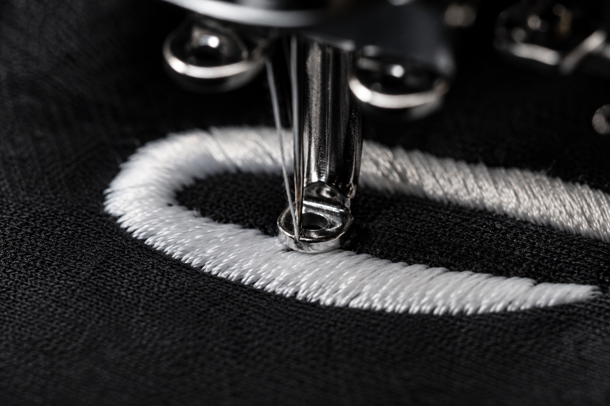

EMBROIDERY
Polished and durable.
Ideal for polos, hats, jackets, bags and uniforms. Advanced uses premium Madeira thread and professional equipment for clean, long-lasting stitching.
Best for: logos, names, uniforms, professional apparel and headwear.